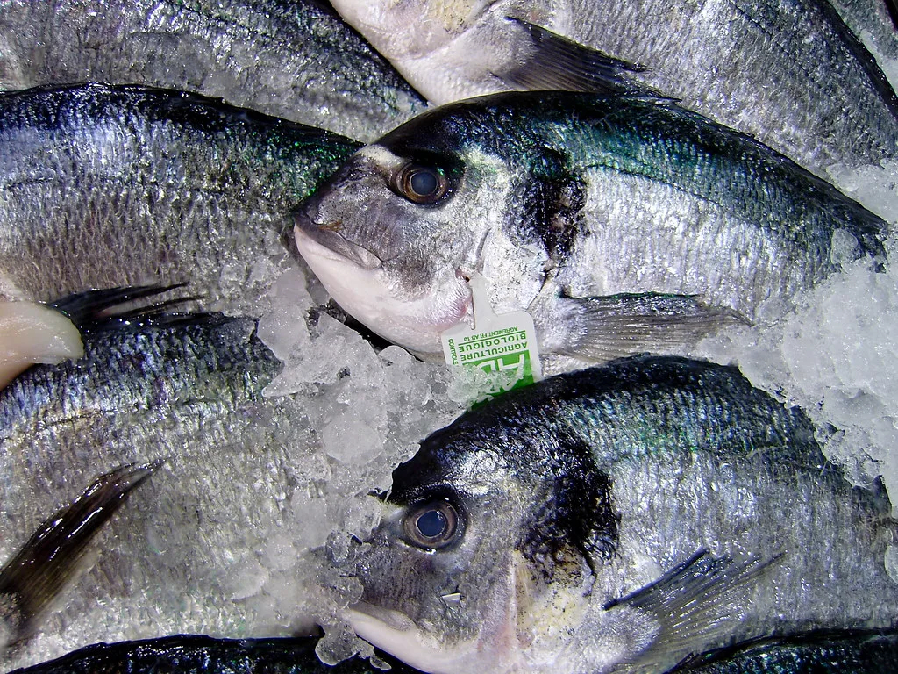

추석 앞두고 비축 수산물 2만t 푼다…명태 최대 40% 할인
해양수산부가 추석 연휴를 앞두고 24일부터 다음달 27일까지 정부 비축 수산물 2만t을 시장에 공급한다고 밝혔다. 명태, 고등어, 오징어 등 명절 수요가 몰리는 주요 품목을 역대 최대 규모로 방출해 장바구니 물가 부담을 낮추겠다는 취지다. 정부 비축 수산물 방출은 매년 명절을 앞두고 반복돼온 조치지만, 이번 물량은 그간 시행된 방출 가운데 가장 큰 규모로 꼽힌다.
품목별 공급 물량을 보면 명태가 1만5700t으로 전체의 대부분을 차지하고, 오징어 1700t, 고등어 1500t, 갈치 800t, 조기 200t, 마른멸치 100t 순이다. 명태 비중이 압도적으로 높은 것은 국내산 생산이 사실상 끊긴 상태에서 수입·비축 물량에 의존하는 구조 때문으로, 국·탕용 수요가 많은 명절 특성상 안정적인 공급이 특히 중요하다는 게 해양수산부의 설명이다.

공급되는 비축 수산물은 전국 주요 전통시장과 대형마트, 온·오프라인 도매시장 등 다양한 유통 경로를 통해 시중에 풀린다. 해양수산부는 소비자들이 시중 가격보다 최대 40%가량 저렴하게 구매할 수 있을 것으로 내다봤다. 명절을 앞두고 특정 품목에 수요가 몰리면서 가격이 단기간 급등하는 현상을 완화하려는 조치로, 방출 시점을 추석 연휴 한 달 전인 이날부터 잡은 것도 수요가 본격적으로 늘기 전에 시장에 물량을 선반영하려는 의도로 풀이된다.
이번 공급에는 손질 부담을 줄인 가공 제품도 함께 포함됐다. 고등어 필렛과 동태포, 통코다리처럼 손질이 이미 끝난 형태의 제품을 함께 풀어, 명절 음식 준비에 드는 시간과 수고를 줄이려는 목적이다. 최근 1인 가구와 맞벌이 가구가 늘면서 손질된 수산물에 대한 수요가 꾸준히 커지고 있는 점을 반영한 조치로 보인다.

정부는 수산물 외에도 성수품 전반의 수급 상황을 지속적으로 점검하고 있다는 입장이다. 폭염이 장기화하면서 농축산물 가격에도 부담이 커진 상황이라, 수산물 방출과 함께 축산물·채소류 등 다른 품목에 대한 추가 대책도 순차적으로 나올 가능성이 있다. 해양수산부는 이번 비축 물량 공급 이후에도 시장 가격 동향을 지켜보며 필요시 추가 방출 여부를 검토하겠다고 밝혔다.
다만 방출 물량이 전국 각지에 고르게 배분되기까지는 다소 시차가 있을 수 있어, 소비자들이 실제 체감하는 가격 인하 효과는 지역과 유통 채널에 따라 차이가 날 수 있다는 지적도 나온다. 해양수산부는 명절 성수기 동안 수산물 가격 동향을 상시 모니터링하며 필요한 경우 유통 현장의 애로사항을 신속히 파악해 대응하겠다고 덧붙였다.
이번 조치는 매년 되풀이되는 명절 물가 관리 대책의 연장선이지만, 방출 규모와 시행 시점 모두 예년보다 앞당겨졌다는 점에서 정부의 물가 관리 의지가 반영됐다는 평가가 나온다. 특히 폭염이 장기화하면서 농축산물 가격 부담이 커진 상황에서, 상대적으로 관리가 가능한 수산물 부문부터 선제적으로 대응에 나섰다는 해석도 있다. 유통업계에서는 방출 물량이 실제 매대에 반영되는 시점이 관건이라며, 추석 연휴가 임박할수록 체감 효과가 커질 것으로 내다봤다. 매년 명절을 앞두고 되풀이되는 물가 관리 대책인 만큼, 이번 방출이 실제 소비자 체감 물가를 얼마나 낮출 수 있을지는 앞으로 남은 기간 시장 반응을 통해 확인될 전망이다.